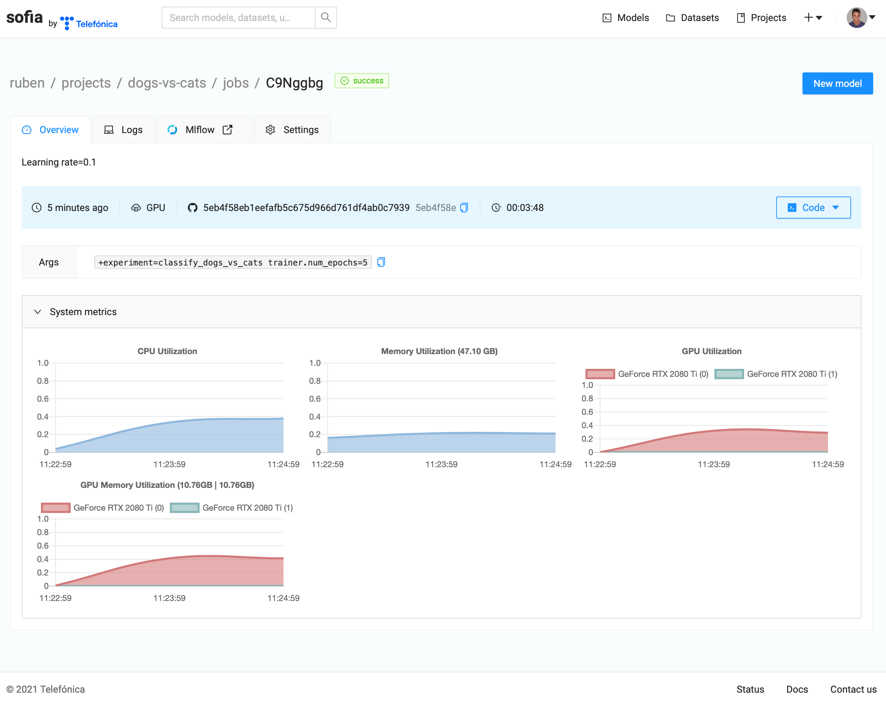
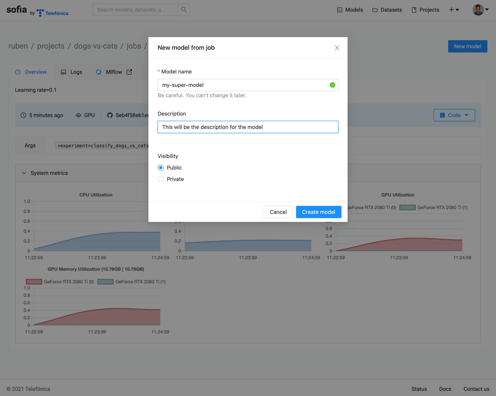

Quick Start¶
Gymnos has a collection of datasets and models to train and predict. It uses the Hydra framework to manage configuration for all of its trainings and MLFlow to track metrics and parameters. It’s extremely recommended to read the Hydra documentation and the MLFlow documentation before.
Using Gymnos¶
- In this section:
We will train a model for image classification,
We will predict an image with the trained model
We will upload the trained model to SOFIA
Make sure you have been logged to SOFIA. This will only be needed the first time.
gymnos-login
Model dependencies¶
Each model will have their own dependencies, we will use the model Transfer Efficientnet so we need to install the vision.image_classification.transfer_efficientnet extra dependency.
pip install gymnos[vision.image_classification.transfer_efficientnet]
Training¶
First of all, we will train the model Transfer Efficientnet with the dataset Dogs vs Cats to classify dogs and cats images.
We will use the command gymnos-train to do the training.
gymnos-train dataset=dogs_vs_cats trainer=vision.image_classification.transfer_efficientnet trainer.classes="[dog,cat]" trainer.num_epochs=1
Let’s split the command:
dataset=dogs_vs_cats: we define the Gymnos dataset to use
trainer=vision.image_classification.transfer_efficientnet: we define the Gymnos trainer to use
trainer.classes: we customize the trainer parameterclasses, refer to model Transfer Efficientnet documentation for full list of parameters
trainer.num_epochs: we customize the trainer parameternum_epochsto1to speed-up training
While training, open MLFlow to visualize live metrics:
mlflow ui
Predicting¶
Once training has finished, we will use the trained model to predict whether an image contains a dog or a cat.
First of all, retrieve the Mlflow run ID from the training, either from the Mlflow dashboard or the training logs.
Now we can predict an image using the trained model. Check the model Predictor to read the documentation about predict method.
Each model will have their own parameters so make sure to check the documentation for each model.
from gymnos.vision.image_classification.transfer_efficientnet import TransferEfficientNetPredictor
predictor = TransferEfficientNetPredictor.from_pretrained(<MLFLOW_RUN_ID>)
predictions = predictor.predict(<IMG_PATH>)
Uploading trained model¶
Finally, we will upload the trained model to SOFIA platform.
We will only need the Mlflow run ID from the training to upload the model.
gymnos-upload <MLFLOW_RUN_ID>
Using Gymnos with SOFIA¶
- In this section:
We will train a model for image classification using SOFIA platform
We will create a SOFIA model from the training
We will predict an image using the created model
Make sure you have been logged to SOFIA. This will only be needed the first time.
gymnos-login
Training¶
We will use the command gymnos-train to do the training.
We will also introduce the concept of experiment. An experiment is simply a YAML file that specifies the trainer and dataset, each one with their parameters. This is useful to avoid writing long commands and to have reproducible results.
We will also introduce the concept of multirun that enable us to train with multiple configurations. Refer to Hydra Multi-Run for more information.
gymnos-train -m hydra/launcher=sofia hydra.launcher.project_name=<SOFIA_PROJECT_NAME> hydra.launcher.device=GPU +experiment=classify_dogs_vs_cats trainer.num_epochs=5,10 trainer.num_workers=-1
Let’s split the command:
-m: this flag specifies we want to use multirun. Mandatory if we specify ahydra/launcher.
hydra/launcher: we definesofiaas the launcher for our training.
hydra.launcher.project_name: we define the SOFIA project name for our training. More information about parameters for SOFIA launcher at SOFIA.
hydra.launcher.device: we want to use GPU for our training. We can also useCPUas the device
+experiment: we define the experiment to use. The experiment will define both the training and dataset. The plus (+) symbol at the beginning is mandatory. More information about experiment at Classify dogs vs cats.
trainer.num_epochs: we override the default value for trainer parameternum_epochswith two values. This will create two trainings on SOFIA, one training wherenum_epochsis equal to5and one training wherenum_epochsis10.
trainer.num_workers: we override the default value for trainer parameternum_workersto use all CPUs while loading the dataset.
The trainining logs will have the link to the SOFIA job for each training.
{kind=link}
Here we can visualize system metrics, logs and live metrics with MLFlow.
Creating model¶
Once training has finished, we can create a model. Click on New model button at the top right of the screen.
{kind=link}
Once form has been submitted, a model will be created.

Predicting¶
We will use the created model to predict whether an image contains a dog or a cat.
First, we need to install dependencies for the model:
pip install gymnos[vision.image_classification.transfer_efficientnet]
Check the model Predictor to read the documentation about predict method.
Predicting will be the same as before but instead of passing the MLFlow run ID as parameter for from_pretrained method, we will pass the SOFIA model (<USERNAME>/models/<MODEL_NAME>).
from gymnos.vision.image_classification.transfer_efficientnet import TransferEfficientNetPredictor
predictor = TransferEfficientNetPredictor.from_pretrained(<USERNAME>/models/<MODEL_NAME>)
predictions = predictor.predict(<IMG_PATH>)